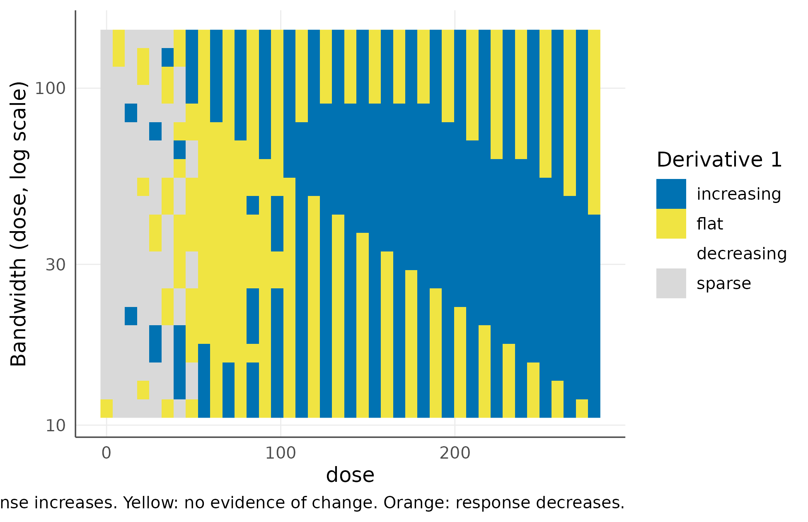
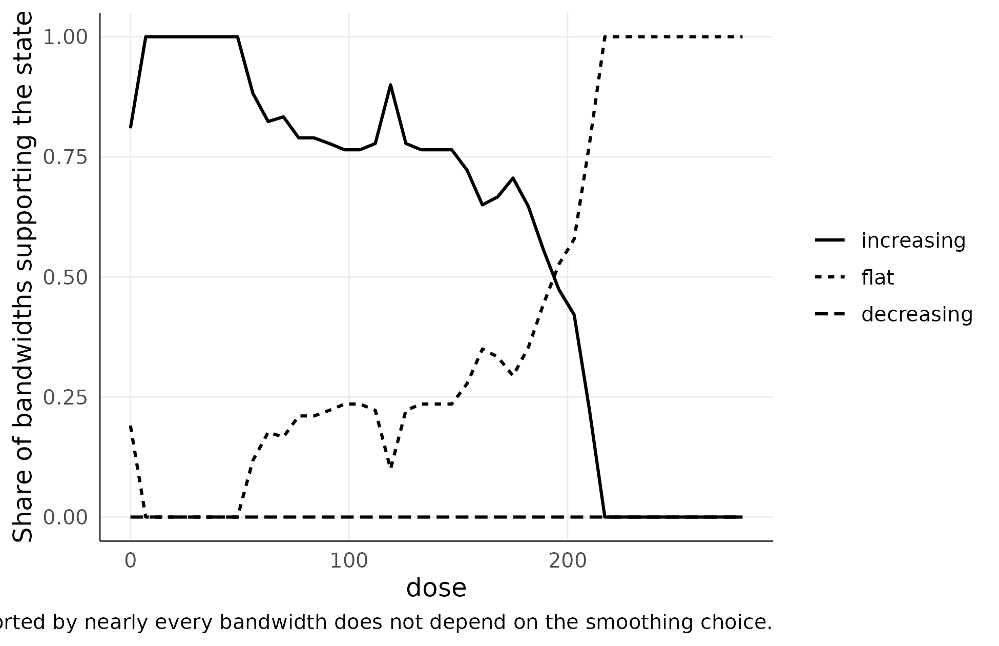
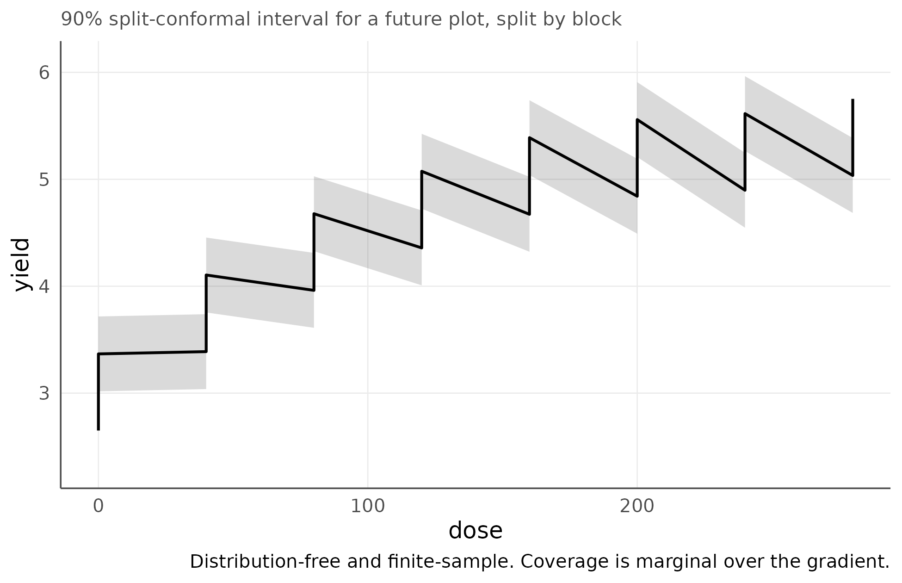
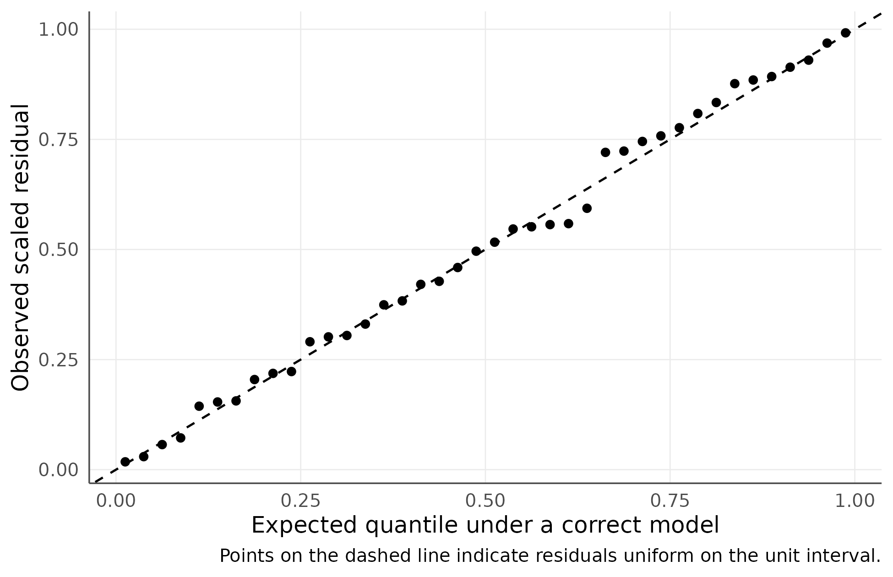
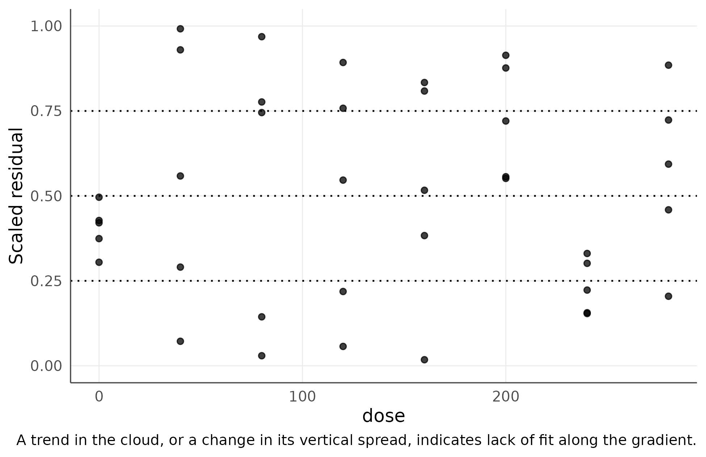
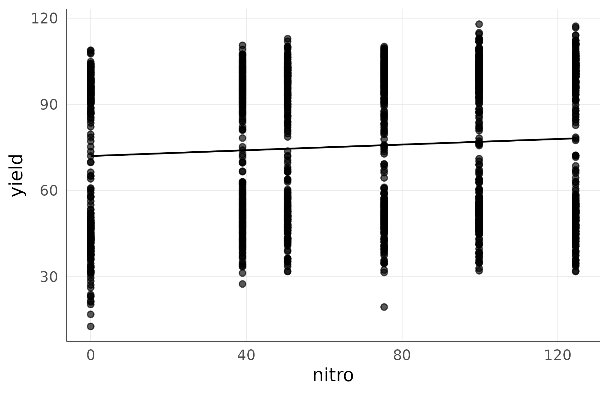
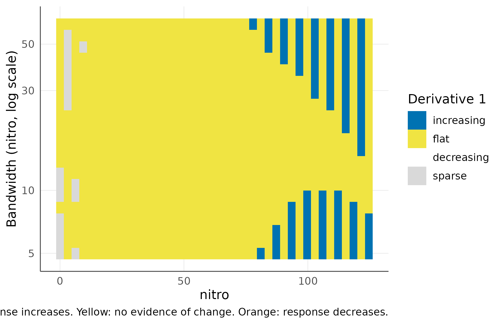

Distribution-Free Uncertainty and Model Checking for Agronomic Regression
agriRank Development Team
Source:vignettes/v11-distribution-free-uncertainty-and-diagnostics.Rmd
v11-distribution-free-uncertainty-and-diagnostics.RmdUncertainty vignette Package:
agriRank Version targeted:
0.14.0 Owns: where a response is really
changing, what interval covers the next plot, and whether a fit
describes the data, all without assuming a distribution.
1. Why this vignette exists
A fitted curve always has a shape. That is a property of the fitting, not of the crop, and three of the commonest errors in applied agronomy follow from forgetting it.
The first is reading the maximum of a fitted curve as a recommendation, when the response never turned over and the maximum landed on the boundary of the tested range. The second is quoting a confidence band for the curve as if it described a grower’s plot, which understates the risk by a large factor. The third is checking a model with a normal QQ-plot, in an analysis whose whole premise is to avoid assuming a distribution.
Each has a distribution-free answer, and this vignette provides all three.
Report what the data contain. Where they contain nothing, say so, rather than reporting the number the fitting produced anyway.
2. Learning objectives
After working through this vignette, the reader should be able to:
- explain why the maximum of a fitted curve is not a recommendation;
- read a SiZer map vertically, and say what a conclusion that survives every bandwidth is worth;
- produce the reportable sentence about where a response is still changing;
- distinguish three kinds of interval and say what each covers;
- explain what exchangeability means in a blocked design, and why it fixes the conformal split;
- choose between
within_blockandnew_blockscope, and justify the choice; - verify empirical coverage, and explain why the guarantee is marginal;
- explain why a normal QQ-plot is the wrong check for this package;
- read simulation-based quantile residuals, and know which of the three checks has power;
- recognise that a model can pass every diagnostic and still be useless;
- apply the whole sequence to a real experiment and accept a null result.
3. The uncertainty module in one map
| Function | Answers | Rests on |
|---|---|---|
agri_np_sizer() |
where is the derivative significant, at every bandwidth | a distribution-free classification |
agri_np_significant_slope() |
the same, as one sentence | agreement across bandwidths |
agri_np_predict(interval=) |
an interval for the curve | the engine’s asymptotic theory |
agri_np_bootstrap() |
an interval for the curve | resampling experimental units |
agri_np_conformal() |
an interval for the next plot | exchangeability alone, finite sample |
agri_np_coverage() |
did the interval keep its promise | the observed data |
agri_np_simdiag() |
does the model describe the data | simulation, no distribution assumed |
3.1 The order to use them in
data.frame(
step = 1:5,
ask = c("does the fit describe the data",
"how much does it explain",
"where is the response still changing",
"what covers the curve",
"what covers the next plot"),
fn = c("agri_np_simdiag()", "agri_np_diagnostics()", "agri_np_sizer()",
"agri_np_bootstrap()", "agri_np_conformal()")
)
#> step ask fn
#> 1 1 does the fit describe the data agri_np_simdiag()
#> 2 2 how much does it explain agri_np_diagnostics()
#> 3 3 where is the response still changing agri_np_sizer()
#> 4 4 what covers the curve agri_np_bootstrap()
#> 5 5 what covers the next plot agri_np_conformal()4. Scope and navigation
This vignette owns the uncertainty and model-checking block of the regression module. It answers three questions that the fitting vignettes deliberately leave open:
- Where along the gradient is the response actually changing, in a way that does not depend on how much we smoothed?
- What interval will contain the yield of the next plot, with a guarantee that survives without assuming a distribution?
- Does the fitted model describe these data, checked without a normality assumption we have refused everywhere else?
It does not own model fitting, which belongs to Nonparametric and Shape-Aware Regression for Agronomic Gradients, nor integer decisions, which belong to Integer-Support Nonparametric Regression.
Every tool here is distribution free. That is not a stylistic preference: it is the only way the answers remain valid for the skewed, bounded and heteroscedastic responses that field experiments routinely produce.
data(agri_dose)
str(agri_dose)
#> 'data.frame': 40 obs. of 3 variables:
#> $ block: Factor w/ 5 levels "B1","B2","B3",..: 1 1 1 1 1 1 1 1 2 2 ...
#> $ dose : num 0 40 80 120 160 200 240 280 0 40 ...
#> $ yield: num 2.61 3.43 3.8 4.42 4.63 ...agri_dose is a nitrogen response in five complete
blocks, with a plateau built in at 200 kg ha-1. The plateau
matters throughout this vignette: it is the feature that separates a
defensible recommendation from an artefact.
fit <- agri_np_regression(yield ~ dose, agri_dose, method = "gam", block = block)
fit
#> agriRank nonparametric regression
#> Method: gam
#> Response: yield
#> Predictors: dose
#> Block adjustment: block1. Where is the response still rising?
1.1 Why the fitted optimum is not enough
agri_np_optimum() reports the maximum of one particular
smooth. That is a narrow question, and its answer moves when the
smoothing moves.
agri_np_optimum(fit)
#> predictor optimum fitted_response objective at_boundary support
#> 1 dose 280 5.035595 max TRUE continuousThe optimum lands on the upper edge of the tested range, flagged by
at_boundary. Reading that as “apply the highest rate” would
be an artefact: the data plateau well before it, and a maximum has to
land somewhere.
The agronomic question is different. It is not where is the maximum, it is from which rate on is there no longer evidence that yield still rises.
1.2 SiZer: an answer that survives the smoothing choice
agri_np_sizer() classifies the sign of the derivative at
every position of the gradient and for a whole column of bandwidths. A
conclusion that holds across the column does not depend on the analyst’s
smoothing choice.
sz <- agri_np_sizer(fit)
sz
#> agriRank SiZer map
#> Predictor: dose Response: yield n = 40
#> Derivative order: 1
#> Bandwidths: 21 from 11.2 to 140
#> Reference bandwidth: 39.6
#>
#> Slope classification at the reference bandwidth:
#> from to state n_grid bandwidth
#> 0 182 increasing 27 39.6
#> 189 280 flat 14 39.6
#>
#> A conclusion that holds across the whole bandwidth column is robust to
#> the amount of smoothing; one that appears at a single bandwidth is not.The table reads directly: over the lower part of the range the slope is significantly positive; beyond it there is no evidence of change. Bandwidths are printed on the scale of the predictor, in kg ha-1, so they can be judged agronomically rather than treated as a tuning artefact.
plot(sz, type = "map")
SiZer map. Each row is one amount of smoothing, each column one position on the nitrogen axis. The four states are: significantly increasing, significantly decreasing, not distinguishable from flat, and sparse, meaning too few observations in that window to decide.
Read the map vertically. A position classified as increasing in every row supports the claim whatever the smoothing; a position that is increasing in only a few rows does not. The sparse cells are equally informative: they mark where the design does not carry enough plots to answer the question at that resolution, which is a statement about the experiment rather than about the crop.
plot(sz, type = "stability")
Share of bandwidths supporting each state. The reading is robust where one curve is near one.
1.3 The statement to put in a paper
agri_np_significant_slope(sz, stability = 0.8)
#> predictor stability increase_from increase_to stops_increasing_at
#> 1 dose 0.8 0 119 126
#> decrease_from decrease_to
#> 1 NA NAThis is the sentence the figure supports: yield increases up to the reported rate and there is no evidence of further increase beyond it, at a threshold of agreement across 80% of the bandwidths. Compare it with the boundary optimum above. The two disagree, and the SiZer statement is the defensible one.
1.4 Curvature
Setting derivative = 2 classifies the second derivative,
which is where a change in the rate of return lives.
summary(agri_np_sizer(fit, derivative = 2))
#> from to state n_grid bandwidth
#> 1 0 280 flat 41 39.59798Here the whole range is classified as flat, which says the data do not support locating a change in curvature. That is the expected outcome with five blocks: second derivatives are estimated far less precisely than first ones, so a curvature claim needs considerably more replication than a slope claim. Reading the flat row as “there is no curvature” would be a mistake; it means “these data cannot resolve it”.
1.5 What SiZer does not do
It describes a continuous gradient. For an integer decision the derivative is not an admissible quantity, and the function says so instead of producing a number:
data(agri_density)
fi <- agri_np_regression(yield ~ plants, agri_density, method = "integer_grid",
integer_base_method = "smoothing_spline",
predictor_support = "observed_integer")
agri_np_sizer(fi)
#> Error:
#> ! SiZer describes the derivative of a continuous gradient. For an integer decision support use agri_integer_difference(), which reports finite differences between admissible decisions.2. An interval for the next plot
2.1 Three questions that are routinely confused
| Tool | What the interval covers | What it assumes |
|---|---|---|
agri_np_predict(interval = "confidence") |
the fitted curve | the asymptotic theory of that engine |
agri_np_bootstrap() |
the fitted curve | that resampling the experimental units is legitimate |
agri_np_conformal() |
a future plot | exchangeability only, finite sample |
The first two describe how well we know the average response. Only the third describes where an individual plot will fall, which is what a grower is asking when a rate is recommended.
nd <- data.frame(dose = c(80, 160, 240),
block = factor("B3", levels = levels(agri_dose$block)))
an <- as.data.frame(agri_np_predict(fit, nd, interval = "confidence"))
bo <- as.data.frame(agri_np_bootstrap(fit, newdata = nd, B = 199, seed = 2))
#> Warning: B < 999 is a speed device for examples and vignettes; final inference
#> needs B >= 999. Silence this note with options(agriRank.quiet_small_B = TRUE).
#> Warning in predict.gam(eng, newdata = newdata, type = "response"): factor
#> levels B3 not in original fit
#> Warning in predict.gam(eng, newdata = newdata, type = "response"): factor
#> levels B3 not in original fit
#> Warning in predict.gam(eng, newdata = newdata, type = "response"): factor
#> levels B3 not in original fit
#> Warning in predict.gam(eng, newdata = newdata, type = "response"): factor
#> levels B3 not in original fit
#> Warning in predict.gam(eng, newdata = newdata, type = "response"): factor
#> levels B3 not in original fit
#> Warning in predict.gam(eng, newdata = newdata, type = "response"): factor
#> levels B3 not in original fit
#> Warning in predict.gam(eng, newdata = newdata, type = "response"): factor
#> levels B3 not in original fit
#> Warning in predict.gam(eng, newdata = newdata, type = "response"): factor
#> levels B3 not in original fit
#> Warning in predict.gam(eng, newdata = newdata, type = "response"): factor
#> levels B3 not in original fit
#> Warning in predict.gam(eng, newdata = newdata, type = "response"): factor
#> levels B3 not in original fit
#> Warning in predict.gam(eng, newdata = newdata, type = "response"): factor
#> levels B3 not in original fit
#> Warning in predict.gam(eng, newdata = newdata, type = "response"): factor
#> levels B3 not in original fit
#> Warning in predict.gam(eng, newdata = newdata, type = "response"): factor
#> levels B3 not in original fit
#> Warning in predict.gam(eng, newdata = newdata, type = "response"): factor
#> levels B3 not in original fit
#> Warning in predict.gam(eng, newdata = newdata, type = "response"): factor
#> levels B3 not in original fit
#> Warning in predict.gam(eng, newdata = newdata, type = "response"): factor
#> levels B3 not in original fit
#> Warning in predict.gam(eng, newdata = newdata, type = "response"): factor
#> levels B3 not in original fit
#> Warning in predict.gam(eng, newdata = newdata, type = "response"): factor
#> levels B3 not in original fit
#> Warning in predict.gam(eng, newdata = newdata, type = "response"): factor
#> levels B3 not in original fit
#> Warning in predict.gam(eng, newdata = newdata, type = "response"): factor
#> levels B3 not in original fit
#> Warning in predict.gam(eng, newdata = newdata, type = "response"): factor
#> levels B3 not in original fit
#> Warning in predict.gam(eng, newdata = newdata, type = "response"): factor
#> levels B3 not in original fit
#> Warning in predict.gam(eng, newdata = newdata, type = "response"): factor
#> levels B3 not in original fit
#> Warning in predict.gam(eng, newdata = newdata, type = "response"): factor
#> levels B3 not in original fit
#> Warning in predict.gam(eng, newdata = newdata, type = "response"): factor
#> levels B3 not in original fit
#> Warning in predict.gam(eng, newdata = newdata, type = "response"): factor
#> levels B3 not in original fit
#> Warning in predict.gam(eng, newdata = newdata, type = "response"): factor
#> levels B3 not in original fit
#> Warning in predict.gam(eng, newdata = newdata, type = "response"): factor
#> levels B3 not in original fit
#> Warning in predict.gam(eng, newdata = newdata, type = "response"): factor
#> levels B3 not in original fit
#> Warning in predict.gam(eng, newdata = newdata, type = "response"): factor
#> levels B3 not in original fit
#> Warning in predict.gam(eng, newdata = newdata, type = "response"): factor
#> levels B3 not in original fit
#> Warning in predict.gam(eng, newdata = newdata, type = "response"): factor
#> levels B3 not in original fit
#> Warning in predict.gam(eng, newdata = newdata, type = "response"): factor
#> levels B3 not in original fit
#> Warning in predict.gam(eng, newdata = newdata, type = "response"): factor
#> levels B3 not in original fit
#> Warning in predict.gam(eng, newdata = newdata, type = "response"): factor
#> levels B3 not in original fit
#> Warning in predict.gam(eng, newdata = newdata, type = "response"): factor
#> levels B3 not in original fit
#> Warning in predict.gam(eng, newdata = newdata, type = "response"): factor
#> levels B3 not in original fit
#> Warning in predict.gam(eng, newdata = newdata, type = "response"): factor
#> levels B3 not in original fit
#> Warning in predict.gam(eng, newdata = newdata, type = "response"): factor
#> levels B3 not in original fit
#> Warning in predict.gam(eng, newdata = newdata, type = "response"): factor
#> levels B3 not in original fit
#> Warning in predict.gam(eng, newdata = newdata, type = "response"): factor
#> levels B3 not in original fit
#> Warning in predict.gam(eng, newdata = newdata, type = "response"): factor
#> levels B3 not in original fit
#> Warning in predict.gam(eng, newdata = newdata, type = "response"): factor
#> levels B3 not in original fit
#> Warning in predict.gam(eng, newdata = newdata, type = "response"): factor
#> levels B3 not in original fit
#> Warning in predict.gam(eng, newdata = newdata, type = "response"): factor
#> levels B3 not in original fit
#> Warning in predict.gam(eng, newdata = newdata, type = "response"): factor
#> levels B3 not in original fit
#> Warning in predict.gam(eng, newdata = newdata, type = "response"): factor
#> levels B3 not in original fit
#> Warning in predict.gam(eng, newdata = newdata, type = "response"): factor
#> levels B3 not in original fit
#> Warning in predict.gam(eng, newdata = newdata, type = "response"): factor
#> levels B3 not in original fit
#> Warning in predict.gam(eng, newdata = newdata, type = "response"): factor
#> levels B3 not in original fit
#> Warning in predict.gam(eng, newdata = newdata, type = "response"): factor
#> levels B3 not in original fit
#> Warning in predict.gam(eng, newdata = newdata, type = "response"): factor
#> levels B3 not in original fit
#> Warning in predict.gam(eng, newdata = newdata, type = "response"): factor
#> levels B3 not in original fit
#> Warning in predict.gam(eng, newdata = newdata, type = "response"): factor
#> levels B3 not in original fit
#> Warning in predict.gam(eng, newdata = newdata, type = "response"): factor
#> levels B3 not in original fit
#> Warning in predict.gam(eng, newdata = newdata, type = "response"): factor
#> levels B3 not in original fit
#> Warning in predict.gam(eng, newdata = newdata, type = "response"): factor
#> levels B3 not in original fit
#> Warning in predict.gam(eng, newdata = newdata, type = "response"): factor
#> levels B3 not in original fit
#> Warning in predict.gam(eng, newdata = newdata, type = "response"): factor
#> levels B3 not in original fit
#> Warning in predict.gam(eng, newdata = newdata, type = "response"): factor
#> levels B3 not in original fit
#> Warning in predict.gam(eng, newdata = newdata, type = "response"): factor
#> levels B3 not in original fit
#> Warning in predict.gam(eng, newdata = newdata, type = "response"): factor
#> levels B3 not in original fit
#> Warning in predict.gam(eng, newdata = newdata, type = "response"): factor
#> levels B3 not in original fit
#> Warning in predict.gam(eng, newdata = newdata, type = "response"): factor
#> levels B3 not in original fit
#> Warning in predict.gam(eng, newdata = newdata, type = "response"): factor
#> levels B3 not in original fit
#> Warning in predict.gam(eng, newdata = newdata, type = "response"): factor
#> levels B3 not in original fit
#> Warning in predict.gam(eng, newdata = newdata, type = "response"): factor
#> levels B3 not in original fit
co <- as.data.frame(agri_np_conformal(fit, newdata = nd, level = 0.95, seed = 1))
data.frame(
dose = nd$dose,
analytic = round(an$upper - an$lower, 3),
bootstrap = round(bo$upper - bo$lower, 3),
conformal = round(co$upper - co$lower, 3)
)
#> dose analytic bootstrap conformal
#> 1 80 0.371 0.284 0.933
#> 2 160 0.366 0.171 0.933
#> 3 240 0.375 0.170 0.933The conformal interval is several times wider, and correctly so. Quoting a confidence band for the curve as if it described a plot understates the risk a farmer carries by a large factor.
B = 199 keeps the vignette fast. Use
B >= 999 for anything reported.
2.2 The guarantee, and where the design enters
Split conformal prediction refits the engine on part of the data, measures absolute residuals on the held-out part, and adds the appropriate empirical quantile of those residuals to the prediction. With the finite-sample correction
the resulting interval satisfies in finite samples, for any engine and any response distribution.
The condition is exchangeability, and this is exactly where a declared design stops being decoration. Plots inside a block were randomized and are exchangeable. Plots in different blocks are not: asserting that they differ is what declaring a block means.
agri_np_conformal() therefore splits by block, and
offers two scopes for two different scientific questions.
cw <- agri_np_conformal(fit, newdata = agri_dose, level = 0.90, seed = 1,
scope = "within_block")
cn <- agri_np_conformal(fit, newdata = agri_dose, level = 0.90, seed = 1,
scope = "new_block")
data.frame(
scope = c("future plot in an observed block", "future plot in a new block"),
mean_width = round(c(mean(cw$upper - cw$lower), mean(cn$upper - cn$lower)), 3)
)
#> scope mean_width
#> 1 future plot in an observed block 0.700
#> 2 future plot in a new block 1.352Predicting into a new block is a stronger claim, so the interval is wider: it now carries between-block variation. It also requires dropping the block-specific term, because a block effect is not estimable in a block that was never observed. The function handles that and records it.
cn
#> agriRank split-conformal prediction intervals
#> Target coverage: 90%
#> Split unit: block
#> Scope: a future plot in a block that was not observed
#> Fitting rows: 16 Calibration rows: 24
#> Conformal quantile: 0.6761
#>
#> block dose yield fit lower upper
#> B1 0 2.612 3.057 2.381 3.733
#> B1 40 3.426 3.725 3.048 4.401
#> B1 80 3.797 4.288 3.612 4.964
#> B1 120 4.423 4.710 4.034 5.386
#> B1 160 4.634 5.011 4.335 5.687
#> B1 200 4.947 5.190 4.514 5.866
#> ... 34 more rows
#>
#> The interval covers a future plot, not the fitted curve, and the coverage
#> is marginal over the gradient rather than guaranteed at each single rate.
plot(cw)
Split-conformal interval for a future plot. The band covers an individual plot, not the average response.
2.3 Holding the method to its promise
A method that promises 90% coverage should be checked.
cv <- agri_np_coverage(cw, data = agri_dose)
data.frame(target = cv$target,
empirical = round(cv$empirical, 3),
mean_width = round(cv$mean_width, 3),
n = cv$n)
#> target empirical mean_width n
#> 1 0.9 0.925 0.7 40
cv$by_block
#> block coverage n
#> 1 B1 1.000 8
#> 2 B2 0.750 8
#> 3 B3 0.875 8
#> 4 B4 1.000 8
#> 5 B5 1.000 8Coverage on the fitting data is optimistic, since those rows helped
build the interval. Its role here is teaching and diagnosis. An honest
assessment needs the simulation study under
inst/calibration.
Note also that the guarantee is marginal, averaged
over the gradient. It does not promise 90% separately at every rate.
normalize = TRUE redistributes the width, wider where the
response is noisier, without changing what is guaranteed.
cnorm <- agri_np_conformal(fit, newdata = agri_dose, level = 0.90, seed = 1,
normalize = TRUE)
data.frame(
version = c("constant width", "locally scaled"),
min_width = round(c(min(cw$upper - cw$lower), min(cnorm$upper - cnorm$lower)), 3),
max_width = round(c(max(cw$upper - cw$lower), max(cnorm$upper - cnorm$lower)), 3),
coverage = round(c(agri_np_coverage(cw, data = agri_dose)$empirical,
agri_np_coverage(cnorm, data = agri_dose)$empirical), 3)
)
#> version min_width max_width coverage
#> 1 constant width 0.700 0.700 0.925
#> 2 locally scaled 0.362 0.976 0.9003. Checking the model without assuming a distribution
3.1 Why not a normal QQ-plot
A normal QQ-plot asks whether residuals look Gaussian. For a package built to avoid assuming a distribution, that is the wrong question asked of the wrong quantity.
Quantile residuals ask a better one: given the fitted model, where does each observation fall inside its own predictive distribution? Under a correct model those positions are uniform on the unit interval, whatever the response distribution is.
sd_fit <- agri_np_simdiag(fit, nsim = 200, seed = 1)
sd_fit
#> agriRank simulation-based residual diagnostics
#> Engine: gam Simulator: agriRank simulation, DHARMa scaling
#> Simulations: 200 n = 40
#> Scaled residual quartiles: 0.0178 0.2735 0.5063 0.7626 0.9918
#> Expected under a correct model: 0.00 0.25 0.50 0.75 1.00
#>
#> check
#> uniformity
#> location along the gradient
#> dispersion along the gradient
#> question statistic
#> Are the scaled residuals uniform overall? 0.07046
#> Is the fitted mean systematically off in some part of the range? 8.03415
#> Does the spread change along the gradient? 9.63220
#> p_value
#> 0.9806
#> 0.3296
#> 0.2104
#>
#> Descriptive. The overall uniformity check has little power against a mean
#> that is wrong in a systematic way; the location check along the gradient is
#> the one that detects it. Neither is a rule for choosing an inferential test.agriRank supplies the simulations by resampling the
fitted residuals, which keeps the reference distribution empirical. When
DHARMa is installed, its scaling machinery is applied to
those same simulations.
plot(sd_fit, type = "uniform_qq")
Left question: are the scaled residuals uniform? Right question: is the fit equally good along the whole gradient?
plot(sd_fit, type = "residual_predictor")
Left question: are the scaled residuals uniform? Right question: is the fit equally good along the whole gradient?
3.2 The check that actually has power
The three checks answer different questions, and they do not have the same power. This is worth demonstrating rather than asserting. Below, the same data are fitted well by a block-adjusted GAM and badly by a straight line, which cannot follow a plateau.
fit_line <- agri_np_regression(yield ~ dose, agri_dose, method = "theil_sen")
good <- agri_np_simdiag(fit, nsim = 300, seed = 1)$checks
bad <- agri_np_simdiag(fit_line, nsim = 300, seed = 1)$checks
data.frame(check = good$check,
p_gam = round(good$p_value, 4),
p_straight_line = round(bad$p_value, 4))
#> check p_gam p_straight_line
#> 1 uniformity 0.9965 1.0000
#> 2 location along the gradient 0.3265 0.0288
#> 3 dispersion along the gradient 0.1841 0.6390The overall uniformity check does not separate them at all: both sit near one. This is the honest limitation of a marginal uniformity test. It pools every observation, so a fit that is too low at the ends and too high in the middle still produces residuals that are uniform on average.
The location check along the gradient is the row that moves, by an order of magnitude, and it is the only one that flags the straight line at the 10% level. It compares residual positions across bins of the predictor, which detects the non-monotone pattern that a rank correlation would miss entirely.
The practical lesson: read the location row, not the headline uniformity row. And read it as a flag, not a verdict. A p-value near 0.08 on 40 observations is a reason to look at the fitted curve against the data, which is exactly what section 1 already showed: the response plateaus, and a line cannot plateau.
4. A real experiment
Simulated data make points cleanly. Real data are the test of whether the tools survive contact with a field.
agridat::lasrosas.corn holds a precision-agriculture
maize trial from Argentina: nitrogen rates applied on a grid, with
topographic classes.
corn <- agridat::lasrosas.corn
corn <- corn[corn$year == 2001, c("yield", "nitro", "topo", "rep")]
corn$rep <- factor(corn$rep)
str(corn)
#> 'data.frame': 1705 obs. of 4 variables:
#> $ yield: num 93.1 95 94.8 98 95.7 ...
#> $ nitro: num 125 125 125 125 125 ...
#> $ topo : Factor w/ 4 levels "E","HT","LO",..: 4 4 4 4 4 4 4 4 4 4 ...
#> $ rep : Factor w/ 3 levels "R1","R2","R3": 1 1 1 1 1 1 1 1 1 1 ...
table(corn$topo)
#>
#> E HT LO W
#> 362 431 424 488There are 1705 plots, the nitrogen rates are not a tidy sequence, and the response is noisy. All three are normal for on-farm data.
fit_corn <- agri_np_regression(yield ~ nitro, corn, method = "gam", block = rep)
agri_np_diagnostics(fit_corn, cv = TRUE, seed = 1)$r2
#> pseudo_r2 cv_r2 spearman_r2 effective_df n
#> 1 0.006534492 0.000422855 0.01725337 1.032231 1705The explained variation is close to zero, and the out-of-fold value is closer to zero still. With 1705 plots that is not a shortage of data. Nitrogen rate simply does not order yield in this field: topography and soil do.
sz_corn <- agri_np_sizer(fit_corn)
agri_np_significant_slope(sz_corn, stability = 0.8)
#> predictor stability increase_from increase_to stops_increasing_at
#> 1 nitro 0.8 NA NA NA
#> decrease_from decrease_to
#> 1 NA NAEvery field is NA. This is the function working
correctly, not failing: there is no position on the nitrogen axis where
the slope is significantly positive across 80% of the bandwidths, so
there is no rate to report and none is invented. Contrast this with any
procedure that would have returned an optimum regardless, and note that
the fitted curve below still looks like it has shape.
agri_np_plot(fit_corn, points = TRUE)
Fitted nitrogen response in a real maize field. The curve has visible shape; the SiZer analysis shows that none of it is supported.
plot(sz_corn, type = "map")
SiZer map for a real maize nitrogen trial. Nothing is classified as increasing at any bandwidth.
The gap between the two figures is the reason this vignette exists. A fitted curve always has a shape. Only the second figure says whether that shape is information.
cf_corn <- agri_np_conformal(fit_corn, newdata = corn, level = 0.90, seed = 1)
cvc <- agri_np_coverage(cf_corn, data = corn)
data.frame(target = cvc$target,
empirical = round(cvc$empirical, 3),
mean_width = round(cvc$mean_width, 2))
#> target empirical mean_width
#> 1 0.9 0.909 68.28
agri_np_simdiag(fit_corn, nsim = 200, seed = 1)$checks
#> check
#> 1 uniformity
#> 2 location along the gradient
#> 3 dispersion along the gradient
#> question statistic
#> 1 Are the scaled residuals uniform overall? 0.01133431
#> 2 Is the fitted mean systematically off in some part of the range? 3.87493961
#> 3 Does the spread change along the gradient? 15.12006276
#> p_value
#> 1 0.98082642
#> 2 0.56755859
#> 3 0.00986146Two things are worth noticing in these last two blocks.
The conformal interval is very wide relative to the yields, and its empirical coverage lands essentially on target. Both are correct. When a predictor carries almost no information, an honest prediction interval for a future plot must be close to the spread of the response itself, and the conformal machinery delivers that without being told.
The diagnostics, meanwhile, are clean. That is not a contradiction. The model describes the data adequately; the data simply have almost nothing to say about nitrogen. A model can pass every diagnostic and still be useless. Diagnostics answer “is the fit wrong”, the explained-variation indices and SiZer answer “is the fit worth anything”. Reporting only the first is a common and consequential omission.
5. Reporting checklist
For a manuscript reporting a fertilizer response, the defensible set is:
- the fitted curve with observed points, from
agri_np_plot(); - the SiZer statement, not the boundary optimum, for where the response stops rising;
- a conformal interval when the recommendation concerns a plot, with the scope stated: observed block, or a new field;
- the location check from
agri_np_simdiag(), reported whatever its result; - the explained variation,
pseudo_r2andcv_r2together, so that a well-behaved but uninformative fit is visible as such; - the resampling counts and seeds, so the numbers can be reproduced.
If the SiZer statement comes back empty, that is the result. Reporting “no rate at which the response is significantly increasing” is a finding, and it is the one the maize field above supports.
Every figure here is a ggplot and every table a data
frame, so both can be restyled with agri_theme() or
exported with agri_save_figure() as described in
Graphics, Tables, Reports, and Reproducibility.
6A. Reporting the fitted extreme as a recommendation
The mistake. “Yield was maximised at 280 kg N/ha.”
Why it is wrong. A maximum has to land somewhere. If the response plateaus rather than turning over, it lands on the boundary of the tested range, which is a property of the experimental design, not of the crop.
What prevents it. agri_np_optimum()
reports at_boundary, agri_np_optimum_test()
reports p_boundary, and
agri_np_significant_slope() supplies the defensible
alternative sentence. See sections 1.1 and 1.3.
6B. Reading a SiZer map horizontally
The mistake. Looking along one row of the map and reporting what that bandwidth says.
Why it is wrong. One row is one smoothing choice. The whole point of the map is that a conclusion holding in every row does not depend on the analyst’s choice, and one holding in a single row does.
What prevents it.
agri_np_significant_slope(stability =) requires agreement
across a stated share of bandwidths. See section 1.2.
6C. Ignoring the sparse cells
The mistake. Treating a grey cell in the map as “no effect”.
Why it is wrong. Sparse means the design does not carry enough plots in that window to decide at that resolution. That is a statement about the experiment, not about the crop.
What prevents it. The four states are reported separately and named in the figure caption.
6D. Quoting a confidence band as a plot interval
The mistake. “A grower at 160 kg N/ha can expect between 4.9 and 5.2 t/ha.”
Why it is wrong. That band covers the average response. An individual plot varies several times more, as the three-way comparison in section 2.1 shows.
What prevents it. agri_np_conformal(),
which covers a future plot with a finite-sample guarantee.
6E. Using the wrong conformal scope
The mistake. Reporting a within_block
interval as applying to a new farm.
Why it is wrong. within_block covers a
plot in a block that was observed. Predicting into a new field is a
stronger claim and requires the wider new_block interval,
which carries between-block variation.
What prevents it. The scope is printed with the object and recorded as an attribute. See section 2.2.
6F. Treating marginal coverage as conditional
The mistake. “The interval covers 90% of plots at every nitrogen rate.”
Why it is wrong. The guarantee is marginal, averaged over the gradient. It does not promise the stated coverage separately at every rate.
What prevents it. The printed output says so, and
normalize = TRUE redistributes the width for those who want
local behaviour, without changing what is guaranteed. See section
2.3.
6G. Checking a distribution-free model with a normal QQ-plot
The mistake. Plotting residuals against normal quantiles after a nonparametric fit.
Why it is wrong. It asks whether the residuals are Gaussian, which the analysis never assumed and does not need.
What prevents it. agri_np_simdiag()
asks the right question instead: where does each observation fall inside
its own predictive distribution. See section 3.1.
6H. Reading the headline uniformity row
The mistake. “The residuals were uniform (p = 0.99), so the model fits.”
Why it is wrong. The uniformity check pools every observation, so a fit that is too low at the ends and too high in the middle still produces residuals that are uniform on average. Section 3.2 demonstrates that it fails to distinguish a plateau-following fit from a straight line.
What prevents it. The location check along the gradient, which is reported in the same table and does have power.
6I. Using a diagnostic to choose a model
The mistake. Fitting several engines and keeping the one whose residual checks look best.
Why it is wrong. Repeated use as a filter turns a description into a selection procedure with unknown properties, and the final p-value no longer means what it says.
What prevents it. The documentation states that
nothing in agri_np_simdiag() selects a method. See section
3.3.
6J. Confusing “not wrong” with “useful”
The mistake. Reporting clean diagnostics as evidence that the model is informative.
Why it is wrong. The maize example in section 4 passes every diagnostic while explaining essentially nothing. Diagnostics answer “is the fit wrong”; the explained-variation indices and the SiZer statement answer “is it worth anything”.
What prevents it. Reporting both, as the checklist in section 5 requires.
6K. Choose by the question
| Your question | Use |
|---|---|
| where is the response still changing |
agri_np_sizer() then
agri_np_significant_slope()
|
| how uncertain is the fitted curve |
agri_np_predict(interval=) or
agri_np_bootstrap()
|
| what will the next plot yield | agri_np_conformal(scope = "within_block") |
| what will a plot on a new farm yield | agri_np_conformal(scope = "new_block") |
| did the interval keep its promise | agri_np_coverage() |
| does the model describe the data |
agri_np_simdiag(), read the location row |
| is the model worth anything | agri_np_diagnostics(cv = TRUE) |
| the treatment is a whole number | the integer vignette; derivatives are refused |
6L. Choose the interval by what you are claiming
| The claim is about | Interval |
|---|---|
| the average response at a rate | analytic or bootstrap, on the curve |
| the shape of the whole curve | a simultaneous bootstrap band |
| one future plot in a field like these | conformal, within_block
|
| one future plot on a new farm | conformal, new_block
|
| the spread of plots at a rate | quantile curves, in the optima vignette |
6M. Terms used in this vignette
| Term | Meaning here |
|---|---|
| bandwidth | how much of the gradient a local estimate averages over |
| SiZer map | the sign of the derivative at every position and bandwidth |
| stability | the share of bandwidths agreeing on a classification |
| sparse | too few observations in a window to classify at that resolution |
| exchangeability | any reordering of the observations is equally likely |
| split conformal | fit on one part, calibrate residuals on another |
| calibration set | the held-out part used to compute the interval width |
| marginal coverage | averaged over the gradient, not guaranteed at each point |
| scope | whether the future plot is in an observed block or a new one |
| quantile residual | where an observation falls inside its own predictive distribution |
| binned Kruskal-Wallis | comparing residual positions across bins of the predictor |
| cured fraction | in a related sense, the mass a model leaves on “never” |
Part IX. Where to go next
| If you now want | Read |
|---|---|
| the engines that produced the curve | Nonparametric and Shape-Aware Regression |
| a rate to recommend, with an interval on its location | Optima, Quantiles, and How the Block Enters the Model |
| whole-number treatments | Integer-Support Nonparametric Regression |
| the design the fit sits inside | Design Foundations, CRD, and RCBD |
| the whole workflow on one experiment | Integrated Agronomic Case Study |
References
Chaudhuri, P. and Marron, J. S. (1999). SiZer for exploration of structures in curves. Journal of the American Statistical Association, 94(447), 807-823. DOI: 10.1080/01621459.1999.10474186.
Dunn, P. K. and Smyth, G. K. (1996). Randomized quantile residuals. Journal of Computational and Graphical Statistics, 5(3), 236-244. DOI: 10.1080/10618600.1996.10474708.
Lei, J., G’Sell, M., Rinaldo, A., Tibshirani, R. J. and Wasserman, L. (2018). Distribution-free predictive inference for regression. Journal of the American Statistical Association, 113(523), 1094-1111. DOI: 10.1080/01621459.2017.1307116.
Vovk, V., Gammerman, A. and Shafer, G. (2005). Algorithmic Learning in a Random World. Springer.